class: center, middle # EE-464 STATIC POWER CONVERSION-II # Resonant Converters ## Ozan Keysan ## [keysan.me](http://keysan.me) ### Office: C-113 <span class="meta">•</span> Tel: 210 7586 --- ## Advantages of High Switching Frequency? -- - ### Reduces filter element sizes -- - ### Reduces transformer size -- - ### Reduced ripple -- ## Disadvantages of High Switching Frequency? -- - ### Increased switching losses --- # Switching Loss <img src="./images/ee464/switching_loss.gif" alt="Drawing" style="width: 800px;"> ### You have more turn-on, turn-off energy dissipation as the frequency increases --- # Hard Switching vs. Soft Switching -- 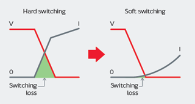 --- # Hard Switching vs. Soft Switching -- 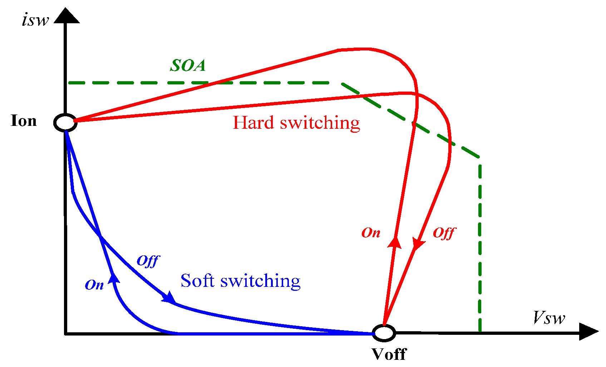 --- # Resonant Converters -- ## Two main types of switching: -- - ## when voltage is zero (ZVS) -- - ## when current is zero (ZCS) --- # Resonant Converters -- ### There are many resonant converter topologies. ### Most common types: -- - ## Resonant Switch Converters -- - ## Load Resonant Converter -- - ## Resonant DC-link Converter --- # Review: RLC Resonant Circuits -- 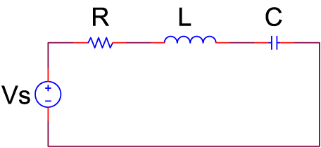 --- # Review: RLC Resonant Circuits 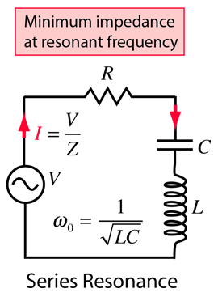 --- # Review: RLC Resonant Circuits - ### [Series RLC Circuit Animation](http://mathlets.org/mathlets/series-rlc-circuit/) - ### [Series RLC Circuit Animation](https://www.edumedia-sciences.com/en/media/545-rlc-series-circuit) - ### [Signal Transmission and Reflection](https://www.youtube.com/watch?v=ozeYaikI11g) --- # Resonant Switch Converter: Zero Current Switching #### W. Hart., Power Electronics, Ch.9 -- 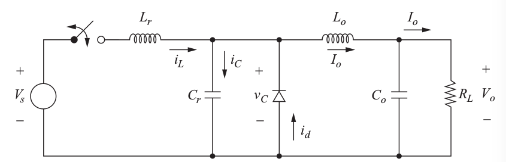 #### Assumption: \\(L_o\\) is large enough, \\(I_o\\) is constant --- ## Operating Mode: \\(t < 0\\) -- 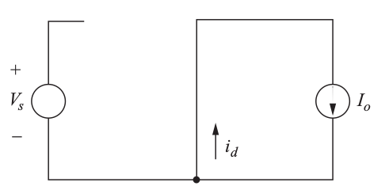 ### Switch open, Diode ON (frewheeling), \\(v_C = 0\\) --- ## Operating Mode: \\( 0 < t < t\_1\\) -- 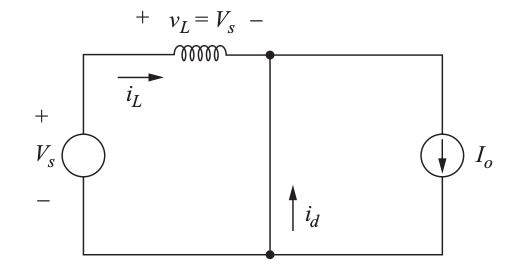 ### Switch closed, \\(L_r\\) start charging ### \\(i_{L} < I_o \\) so the diode is still ON --- ## Operating Mode: \\( t\_1 < t < t\_2\\) -- 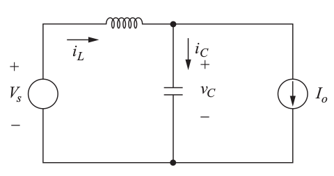 ### When \\(i_{L} = I_o \\), the diode turns OFF ### Excess inductor current charges the capacitor \\(v_C > 0\\) --- ## Operating Mode: \\( t\_1 < t < t\_2\\) -- ## If no action is taken, oscillation starts in the LC circuit! --- ## Operating Mode: \\( t\_2 < t < t\_3\\) -- ## Turn the switch off, when \\(i_{L} =0 \\) -- ## =Zero current switching! -- ## Alternatively a unidirectional switch (SCR) can be used. --- ## Operating Mode: \\( t\_2 < t < t\_3\\) -- 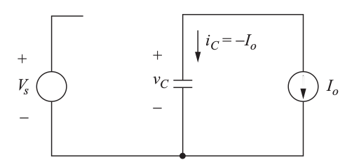 ### Very small switching loss (due to capacitances in the switch) ### Output current is supplied by C (discharges linearly) --- ## Initial Mode: \\( t\_3 < t < T\\) -- ### \\(v_C = 0\\), diode starts freewheeling, ### Switch ready to to turn ON (zero current) --- ## Analysis of the Operating Modes #### W. Hart., Power Electronics, Ch.9-2 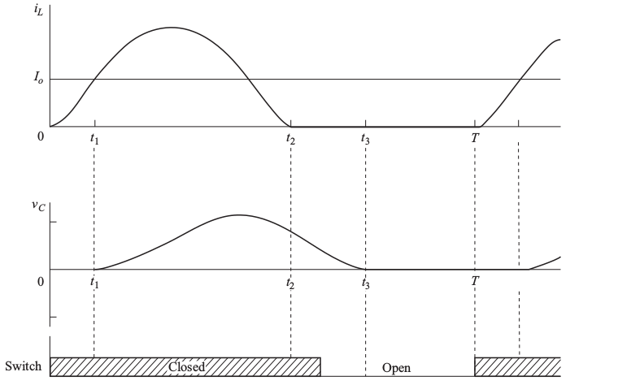 --- ## Operating Mode: \\( 0 < t < t\_1\\) ### Inductor Lr sees constant Vs voltage and the current increases linearly -- ### \\(i\_L(t)=\dfrac{V\_s}{L\_r} t \\) -- ### The moment that the current reaches to Io is: -- ### \\(t\_1 = \dfrac{I\_o L\_r}{V\_s}\\) --- ## Operating Mode: \\( t\_1 < t < t\_2\\) ### Diode is off, capacitor voltage starts building up: -- ### \\(v\_c(t) = V\_s - L\_r \dfrac{di\_L(t)}{dt}\\) --- ## Operating Mode: \\( t\_1 < t < t\_2\\) ### Differentiating and solving second order LC circuit (as in Ch9.2) -- ### \\( i\_L(t)=I\_o +\frac{V\_s}{Z\_o} sin \omega\_0 (t-t\_1) \\) ### \\( Z\_0 = \sqrt{\frac{L\_r}{C\_r}} \\) ### \\( \omega\_0 = \frac{1}{\sqrt{L\_r C\_r}} \\) -- ### \\( t\_2 - t\_1 = \frac{1}{\omega\_0} [sin^{-1}(\frac{-I\_0 Z\_0}{V\_s}) ]\\) --- ## Operating Mode: \\( t\_1 < t < t\_2\\) ### Capacitor voltage can be expressed as: ### \\( V\_c (t) = V\_s [1- cos (\omega\_0 (t-t\_1))]\\) ### which implies capacitor voltage can reach up to 2 Vs (a disadvantage of resonant converters) --- ## Operating Mode: \\( t\_2 < t < t\_3\\) ### As the inductor current reaches to zero at t2, the switch can be openced with no current (ZCS) -- ### Capacitor discharges with constant load current. ### \\( V\_c(t) =\frac{I\_0}{C\_r} (t\_2 -t) + V\_c(t\_2) \\) -- ### If Vc=0 at t3: ### \\(t\_3 - t\_2 = \frac{C\_r v\_c(t\_2)}{I\_o} = \frac{C\_r V\_s [1-cos(\omega\_o (t\_2 - t\_1))]}{I\_o}\\) --- ## Operating Mode: \\( t\_3 < t < T\\) ### In this interval switch is off (diode freewheeling) ### The length of this invertal directly controls the output voltage. ### The switching frequency should be adjusted so that t3 is less than period (T). --- # Derivation of the Output Voltage -- ## Use energy balance (L-C are lossless) -- ### \\(V_o = V_s f_s [\dfrac{t\_1}{2}+ (t\_2 - t\_1)+ (t\_3-t\_2)]\\) -- ## \\(V_o < V_s \\) operates as a buck converter ## Output voltage is controlled by the switching frequency! --- ## Analysis of the Operating Modes -- ## Time internals are a function of output current -- ## Load changes switching frequency must be changed 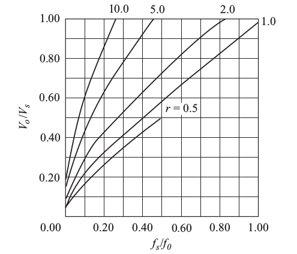 --- # Example ( Hart 9-1) --- # Resonant Switch Converter: Zero Voltage Switching #### W. Hart., Power Electronics, Ch.9 -- 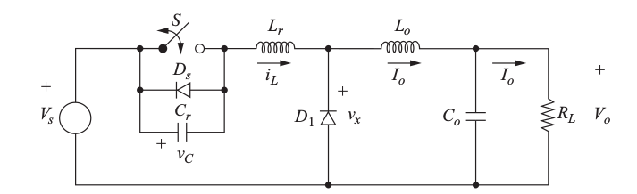 --- ## Operating Mode: \\(t < 0\\) -- 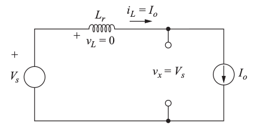 ### D1 off, switch ON, \\(i_{L} = I_o \\) --- ## Operating Mode: \\( 0 < t < t\_1\\) -- 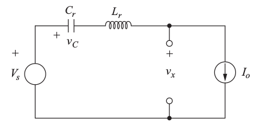 ### Switch opened, \\(v_C\\) start charging linearly --- ## Resonant Switch Converter: Zero Voltage Switching 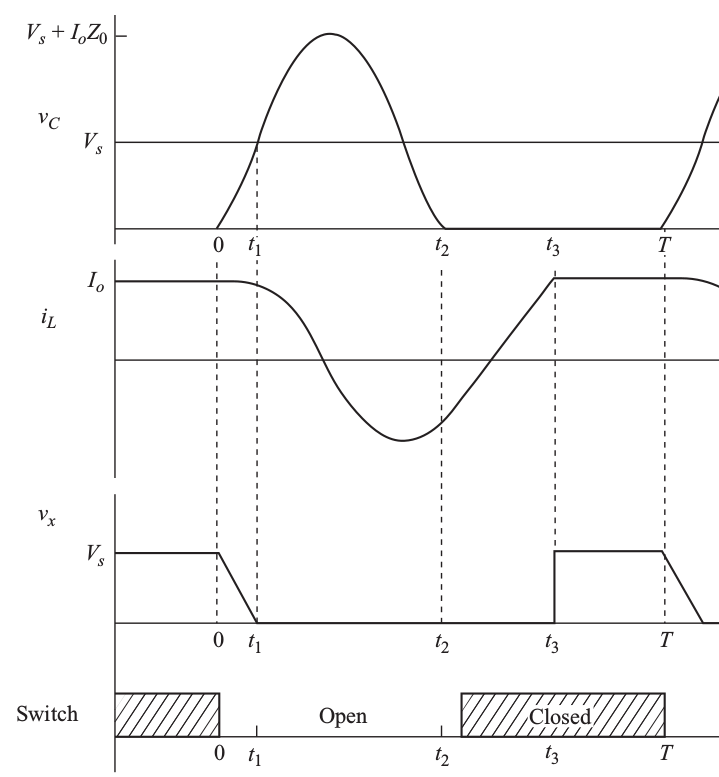 --- ## Operating Mode: \\( t\_1 < t < t\_2\\) -- 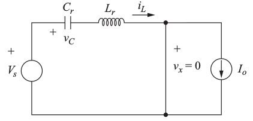 ### When \\(v_C = V_s \\), the diode (D1) is forward biased ### LC resonant circuit start oscillating, ### When \\(v_C = 0 \\), the diode (Ds) turns on to carry iL. (which is negative) --- ## Resonant Switch Converter: Zero Voltage Switching --- ## Operating Mode: \\( t\_2 < t < t\_3\\) -- 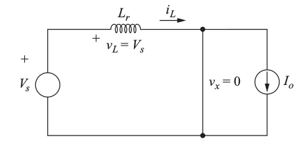 ### Ds is ON, \\(V_{L} = V_s \\), inductor current increases linearly ### Switch should be closed just after Ds turns on (zero voltage switching) ### When \\(i_{L} = I_o \\), D1 is off, and back to the initial position --- ## Initial Mode: \\( t\_3 < t < T\\) -- --- ## Resonant Switch Converter: Zero Voltage Switching --- ## Resonant Switch Converter: Zero Voltage Switching ## Output voltage=? --- ## Resonant Switch Converter: Zero Voltage Switching ## Output voltage = Average of \\(v_x(t)\\) -- ### \\(v\_x(t) = V\_s (1-t/t\_1 ) \quad \\) for \\(0<t<t\_1\\) -- ### \\(v\_x(t) = 0 \quad \\) for \\(t\_1< t < t\_3\\) -- ### \\(v\_x(t) = V\_s \quad \\) for \\(t\_3 < t <T\\) -- ### Calculate the average voltage --- ## Resonant Switch Converter: Zero Voltage Switching ## Output voltage -- ### \\(V\_o = \dfrac{V\_s}{T} [\dfrac{t\_1}{2}+(T-t\_3)] \\) -- ####or ### \\(V\_o = V\_s [ 1 - f\_s (t\_3 - \dfrac{t\_1}{2})] \\) -- ### Output voltage is controlled by varying fs ### \\(V\_o < V\_s \\), buck converter --- ## Resonant Switch Converter: Zero Voltage Switching 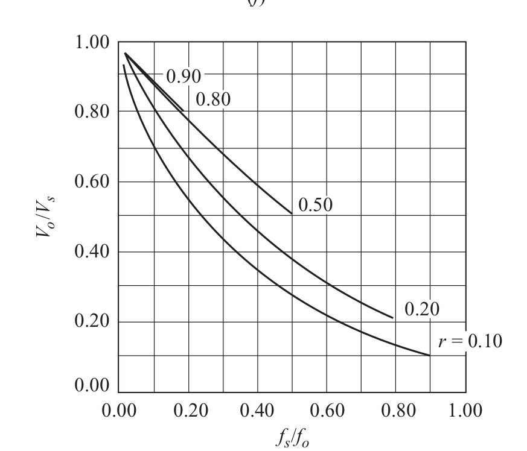 ## Output voltage is controlled by varying fs --- # Series Resonant Inverter 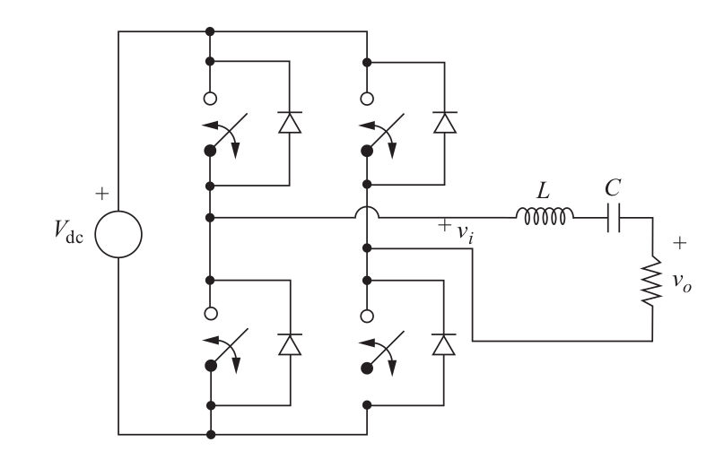 --- # Series Resonant Inverter --- # Series Resonant Inverter 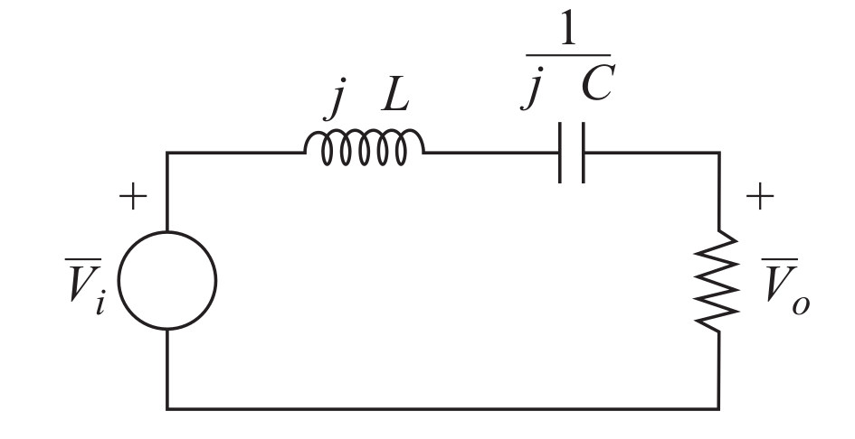 ### Phasor equivalent circuit --- # Series Resonant Inverter 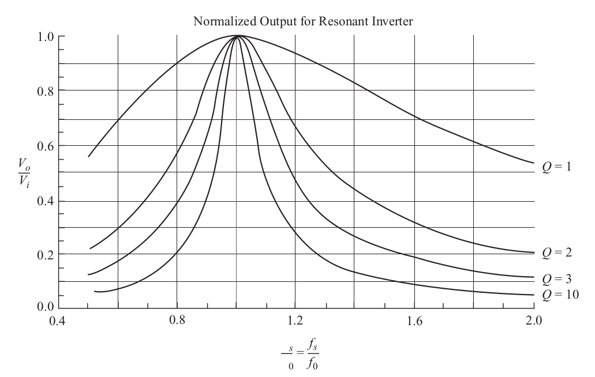 ### Frequency Response --- # Series Resonant Converter -- ### Add a diode rectifier to the output of the series resonant inverter -- 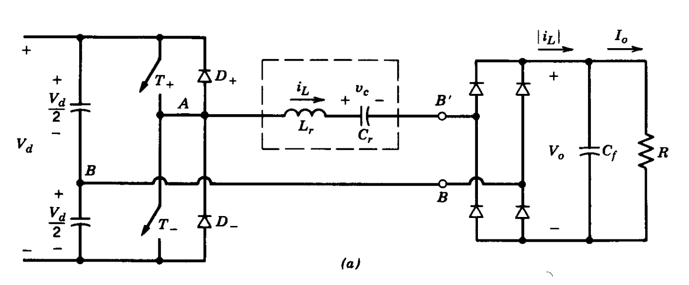 --- # Variations of the Resonant Converters -- ### LLC Resonant Converter -- <img src="https://e2e.ti.com/resized-image/__size/550x0/__key/communityserver-blogs-components-weblogfiles/00-00-00-03-59/2045.blog-pic1.jpg" alt="Drawing" style="width: 700px;"> --- ## Resonant Converter (Wireless Power Transfer) <img src="https://www.mouser.com.tr/images/marketingid/2012/img/115867879_WurthElectronics_QiWirelessPowerChargingCoils1.png" alt="Drawing" style="width: 500px;"> ### [Qi Wireless Charging](https://www.wirelesspowerconsortium.com/qi/) ### [Multi-Coil Wireless Charger](https://www.nxp.com/design/designs/automotive-multi-coil-wireless-charging-transmitter:RDWCT-15WTXAUTO) --- ## Resonant Converter (Wireless Power Transfer) <img src="https://assets.newatlas.com/dims4/default/b600a66/2147483647/strip/true/crop/1620x1080+0+0/resize/1200x800!/format/webp/quality/90/?url=http%3A%2F%2Fnewatlas-brightspot.s3.amazonaws.com%2Farchive%2Fbmw-wireless-charging-2.jpg" alt="Drawing" style="width: 600px;"> ### [BMW Electric Car Charger](https://newatlas.com/bmw-wireless-charging/54792/) --- ## Resonant Converter (Wireless Power Transfer) 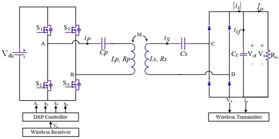 ### [Linearization and Control of Series-Series WPT](https://www.nxp.com/design/designs/automotive-multi-coil-wireless-charging-transmitter:RDWCT-15WTXAUTO) --- ## Various Configurations ### [For curious students: Overview of resonant circuits](https://www.mdpi.com/1996-1073/10/7/894/htm) 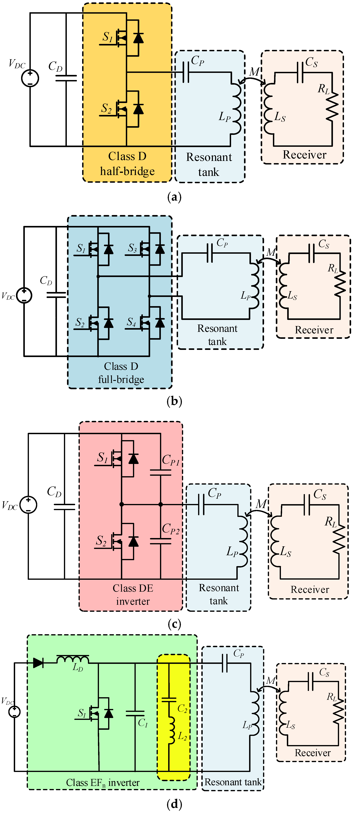 --- # [Dunning-Kruger Effect](https://en.wikipedia.org/wiki/Dunning%E2%80%93Kruger_effect) -- <img src="https://catalogofbias.org/wp-content/uploads/sites/2/2018/03/dk-effect.png" alt="Drawing" style="width: 800px;"> --- # [Dunning-Kruger Effect](https://en.wikipedia.org/wiki/Dunning%E2%80%93Kruger_effect) <img src="http://agilecoffee.com/wp-content/uploads/2016/12/14-dunning-kruger-1024x753.jpg" alt="Drawing" style="width: 700px;"> --- # [Dunning-Kruger Effect](https://en.wikipedia.org/wiki/Dunning%E2%80%93Kruger_effect) <img src="https://i.imgur.com/XjYPMYr.jpg?1" alt="Drawing" style="width: 600px;"> --- # Education in EEE ### [ODTÜ Elektrik size neler kattı?](https://www.youtube.com/playlist?list=PLI9c5vj6NMoJ5Afawulb9TckBB7O7r2Xn) --- # The End <img src="https://preciesmark.nl/wp-content/uploads/2016/02/theend-720x340.jpg" alt="Drawing" style="width: 800px;"> --- ## You can download this presentation from: [keysan.me/ee464](http://keysan.me/ee464) --- #Extras --- # Alternative ZCS Converter ## Mohan Section 9.5 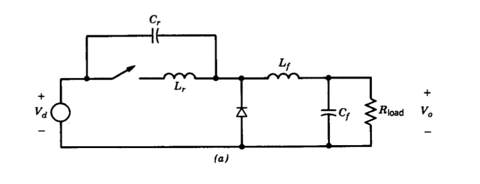 --- # Series Resonant Converter -- ### Add a diode rectifier to the output of the series resonant inverter -- --- # Series Resonant Converter -- ### Simplified Equivalent Circuit -- 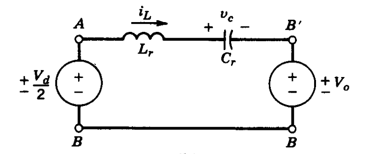 --- # Series Resonant Converter ### Continuous Conduction Mode with \\(\omega\_s > \omega\_0\\) 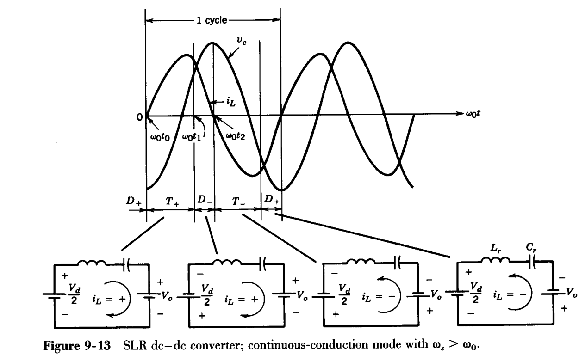 --- # Series Resonant Converter ### Continuous Conduction Mode with \\(\omega\_s > \omega\_0\\) - ### iL is approximately sinusoidal - ### Switches turn on at zero voltage (no turn-on losses) - ### but they turn-off at non-zero current (turn-off losses exist) --- # Series Resonant Converter ### Continuous Conduction Mode with \\( \omega\_0/2 < \omega\_s < \omega\_0\\) 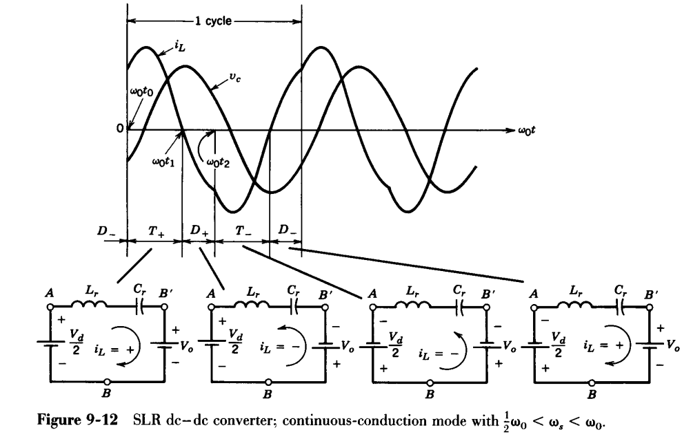 --- # Series Resonant Converter ### Continuous Conduction Mode with \\( \omega\_0/2 < \omega\_s < \omega\_0\\) - ### T+ conducts less than 180 degrees - ### Switches turn on with finite voltage (turn-on losses exist) - ### Switches turn-off with zero current (no turn-off losses) - ### Turn-off occurs naturally, so thyristors can be used --- # Series Resonant Converter ### Discontinuous Conduction Mode with \\( \omega\_s < \omega\_0/2\\) <img src="./images/ee464/series_resonant3.png" alt="Drawing" style="width: 700px;"> --- # Series Resonant Converter ### Discontinuous Conduction Mode with \\( \omega\_s < \omega\_0/2\\) - ### iL is zero for some time (discontinuous conduction) - ### Switches turn on at zero current, with finite voltage - ### Switches turn-off naturally with zero current (no turn-off losses) - ### Thyristors can be used - ### Disadvantage: Relatively large peak current in the circuit --- # Variations of the Resonant Converters ### Parallel Resonant Converter -- 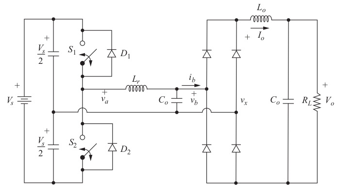 --- # Variations of the Resonant Converters ### Resonant DC Link Converter -- 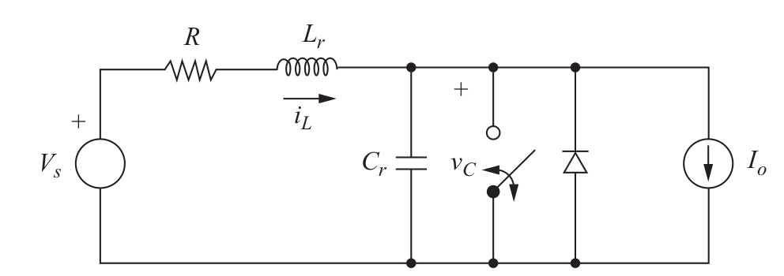 --- # Variations of the Resonant Converters ### 3-Phase Resonant DC Link Converter -- 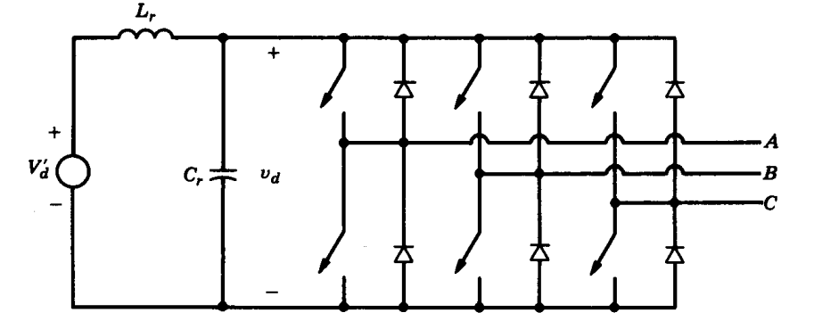